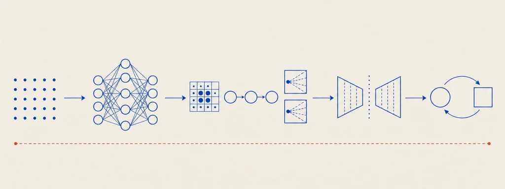

University of Bologna · Prof. Matteo Ferrara · a.y. 2025/2026
Deep Learning
12 chapters54 interactive widgets63 plates~9 hours of study

Plate 00 — The road of the course. Foundations (math and automatic differentiation), then neural networks and how to train them, then the architectures that made deep learning scale (CNNs, RNNs, autoencoders, transformers), and finally the two frontiers: generating data and learning from interaction.
How to study
The chapters are in dependency order: read them from the beginning. Every chapter consolidates in one place everything the lectures said about a topic.
The plates are archival technical diagrams reconstructed from the slides: read them as figures, not decoration. The widgets (simulators, steppers, explorers) are worked implementations of the mechanisms — use them actively.
Each chapter ends with “Check your understanding”: collapsible exam-style questions with answers in the exact wording of the course.
Every chapter footer lists the lecture deck it comes from; sources are the official course slides, not redistributed.